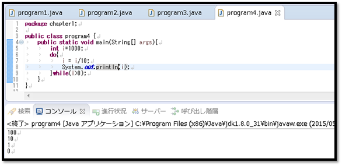

[Java] 制御文 - ループ (for, while, do~while)
こんにちは。明月です。
以前、制御文の中で分岐文に関して勉強しました。実は一つのページでやろうと思いましたが、以外に量が多くて分岐、ループ、ループ分岐で分けました。
link - [Java スタディ - 5] 制御文 - 分岐 (if, switch〜case)
このページでは制御文の中でループに関して説明します。ループって言うのは作成した処理を繰り返して実行するという意味になります。
例えば、「int」型の変数に「1」を「100」回に加算したいといえば、ループの制御文を使うことです。
ループには3パタンがありまして、下記とおりに説明します。
for文
- for文は初期値を終了条件まで「false」になるまで初期値を増加され、繰り返して文章を実行する制御文です。
for (初期値; 条件式; 増加値) {
文書;
}
初期値には「i=0」、条件式「i<10」、増加値「i++」がなっています。つまり、「i」の変数には初期値で「0」を入力します。条件式で「i<10」なので初めは「true」になります。
条件式で「true」になると「System.out.println(i)」を実行します。結果はコンソールで「i」の値、つまり「0」を出力しますね。
文書が終わると「i」の値を「1」を増加します。「0」から「1」になります。また条件式を見れば「i」の値は「10」より小さいので「true」になります。
「true」なので「System.out.println(i)」が実行します。その続き、「i」が「10」になるまで繰り返しますね。
while文
- while文は条件式が「true」の場合に実行する、ループ制御文です。
while (条件式) {
文書;
}
こんにちは。明月です。
以前、制御文の中で分岐文に関して勉強しました。実は一つのページでやろうと思いましたが、以外に量が多くて分岐、ループ、ループ分岐で分けました。
link - [Java スタディ - 5] 制御文 - 分岐 (if, switch〜case)
このページでは制御文の中でループに関して説明します。ループって言うのは作成した処理を繰り返して実行するという意味になります。
例えば、「int」型の変数に「1」を「100」回に加算したいといえば、ループの制御文を使うことです。
ループには3パタンがありまして、下記とおりに説明します。
for文
- for文は初期値を終了条件まで「false」になるまで初期値を増加され、繰り返して文章を実行する制御文です。
for (初期値; 条件式; 増加値) {
文書;
}
初期値には「i=0」、条件式「i<10」、増加値「i++」がなっています。つまり、「i」の変数には初期値で「0」を入力します。条件式で「i<10」なので初めは「true」になります。
条件式で「true」になると「System.out.println(i)」を実行します。結果はコンソールで「i」の値、つまり「0」を出力しますね。
文書が終わると「i」の値を「1」を増加します。「0」から「1」になります。また条件式を見れば「i」の値は「10」より小さいので「true」になります。
「true」なので「System.out.println(i)」が実行します。その続き、「i」が「10」になるまで繰り返しますね。
while文
- while文は条件式が「true」の場合に実行する、ループ制御文です。
while (条件式) {
文書;
}
簡単に説明すると「for」のループ制御文から「初期式」と「増加値」がない制御だと思えば理解しやすいです。
注意のことは「初期値」と「増加値」がないので、無限ループになる可能性があります。
上の例は「while」の前に「i」の変数に「1000」を設定します。「while」の条件式は「0」より大きいかをチェックすることなので、結果は「true」になって「while」の文章が実行します。
「while」の文章の中は「i」のデータを「10」で割ります。もしこの構文がなければ、無限ループになります。
次は「System.out.println(i)」で「i」の値を出力することですね。
do~while文
- 「do~while」文は「while」文と似てますが、差異は「while」の場合は文章を実行する前に条件を見て実行しますが、「do~while」の場合は一応文章を実行して条件をチェックすることですね。
その意味は条件が初めから合わなくても一回は実行する意味です。
do {
文章
} while (条件式)

上の「while」と似ているな例を作りましたが、初めの「i」の値は「1000」で設定して「i/10」を実行する。後、「i」の値は「100」になり「System.out.println(i)」によってコンソールに出力します。
「while」の条件式によって「i>100」が成立することを確認し、繰り返して実行されます。
for 文 (foreach用法)
- 上でforに関して説明しましたが、forは「初期値」、「条件式」、「増加値」が必要なループ式です。
でもArrayやListの場合は上の「初期値」、「条件式」、「増加値」を省略して使えます。
for (データタイプ 変数名 : リスト<データタイプ>) {
}
「int」型の配列を「10」個を宣言してそのデータに「10」単位で「10」から「100」までデータを入力しました。その後、「for」文を利用して配列の「0」から「9」までのデータを順番とおりに出力する例です。
後、配列とリストパートでよく使うiterationパタンのループ制御です。
簡単に説明すると「for」のループ制御文から「初期式」と「増加値」がない制御だと思えば理解しやすいです。
注意のことは「初期値」と「増加値」がないので、無限ループになる可能性があります。
上の例は「while」の前に「i」の変数に「1000」を設定します。「while」の条件式は「0」より大きいかをチェックすることなので、結果は「true」になって「while」の文章が実行します。
「while」の文章の中は「i」のデータを「10」で割ります。もしこの構文がなければ、無限ループになります。
次は「System.out.println(i)」で「i」の値を出力することですね。
do~while文
- 「do~while」文は「while」文と似てますが、差異は「while」の場合は文章を実行する前に条件を見て実行しますが、「do~while」の場合は一応文章を実行して条件をチェックすることですね。
その意味は条件が初めから合わなくても一回は実行する意味です。
do {
文章
} while (条件式)
上の「while」と似ているな例を作りましたが、初めの「i」の値は「1000」で設定して「i/10」を実行する。後、「i」の値は「100」になり「System.out.println(i)」によってコンソールに出力します。
「while」の条件式によって「i>100」が成立することを確認し、繰り返して実行されます。
for 文 (foreach用法)
- 上でforに関して説明しましたが、forは「初期値」、「条件式」、「増加値」が必要なループ式です。
でもArrayやListの場合は上の「初期値」、「条件式」、「増加値」を省略して使えます。
for (データタイプ 変数名 : リスト<データタイプ>) {
}
「int」型の配列を「10」個を宣言してそのデータに「10」単位で「10」から「100」までデータを入力しました。その後、「for」文を利用して配列の「0」から「9」までのデータを順番とおりに出力する例です。
後、配列とリストパートでよく使うiterationパタンのループ制御です。
- [Java] Java servletでインスタンスを初期する方法2019/10/17 07:15:48
- [Java] Spring web frameworkで発生する文字化けのEncoding設定2019/10/16 07:32:55
- [Java] Web Spring frameworkでfilter設定2019/10/15 20:12:35
- [Java] Web serviceのweb.xmlでエラーページ設定2019/10/14 20:13:44
- [Java] JPAのDAOをFactoryパターンで管理する方法2019/10/13 22:55:52
- [Java] JPAのSpring frameworkで依存性注入する方法2019/10/13 00:40:08
- [Java] JPAでDAOを生成する方法2019/10/11 07:30:14
- [Java] JPAでトランザクションの使用方法とオブサーバーパターンで共通トランザクション関数を作り方2019/10/10 07:29:43
- [Java] JPAのQuery を作り方2019/10/09 07:34:08
- [Java] JPAのEntityクラス設定(Cascade, fetch)2019/10/08 07:43:33
- [Java] JPAでpersistance.xml設定とentityクラス設定(@GeneratedValue設定)2019/10/07 07:38:13
- [Java] EclipseでJPAフレームワーク設定する方法2019/10/04 19:24:43
- [Java] Web spring frameworkのJSPで使う言語 JSTL - XML2019/10/03 20:02:06
- [Java] Web spring frameworkのJSPで使う言語 JSTL - 関数、データベース2019/10/02 21:00:22
- [Java] Web spring frameworkのJSPで使う言語 JSTL - コアー、フォーマッティング2019/10/01 21:48:08
- [Python] 21. データベース(mariaDB)を連結する方法2020/06/24 18:51:50
- [Python] 20. stringフォマード(Formatting)と補間法(interpolation)2020/06/23 19:03:21
- [Python] 19. 非同期IOのasync/await(asyncio)を使う方法2020/06/22 18:10:12
- [Python] 18. ネットワーク(Socket)通信する方法2020/06/18 19:53:56
- [Python] 17. スレッド(Thread)とロック(lock)、そしてデッドロック(deadlock)2020/06/18 00:19:45
- [Python] 16. IO(ファイル読み取り、書き込み)を扱う方法2020/06/16 18:37:00
- [Python] 15. クラスを継承する方法2020/06/15 18:20:07
- [Python] 14. クラスプロパティ(Property)2020/06/12 17:45:13
- [Python] 13. クラス関数(class method)とダック・タイピング、そして特殊メソッド2020/06/11 19:42:29
- [Python] 12. クラス(Class)を使う方法2020/06/10 19:33:33
- [Python] 11. デコレーター（Decorator）を使う方法2020/06/09 17:27:18
- [Python] 10. モジュールとパッケージ(import)2020/06/08 19:07:50
- [Python] 09. 例外処理する方法2020/06/05 17:11:47
- [Python] 08. ジェネレータ(Generator)2020/06/04 18:46:08
- [Python] 07. globalとnonlocal2020/06/03 20:34:49